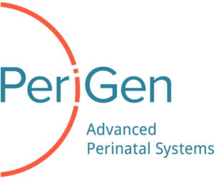

About Me
I'm a Data Scientist at Microsoft with a Ph.D. in Applied Mathematics from North Carolina State University. My research centers on probabilistic machine learning and uncertainty quantification, particularly in settings where predictions directly influence decisions.
During my Ph.D., I developed Gaussian process models for predicting labor progression in real time and used physics-informed neural networks to recover hidden infection dynamics in kidney transplant patients. I also worked on Alzheimer's cognitive decline forecasting at Johnson & Johnson, hotel demand prediction at SAS, and Bayesian uncertainty quantification funded by the NSF.
Tools & Skills
Research
Labor Progression Prediction
We developed a Gaussian process model that learns each patient's unique labor pattern in real time and outperformed WHO and ACOG guidelines on a dataset of 49,694 births.
Read more NC State University (PhD)Hidden Dynamics in BK Virus Infection
After kidney transplant, BK virus reactivation can cause graft loss, but the mechanism linking viral dynamics to kidney function is poorly understood. We combined PINNs with symbolic regression to recover interpretable ODE terms from sparse clinical data.
Read more Johnson & JohnsonAlzheimer's Disease Progression
Most Alzheimer's models predict only the total ADAS-Cog score. We used GP models with ordinal likelihood on CPAD clinical trial data to forecast all 11 individual subscores, capturing how different cognitive domains decline at different rates.
Read more SAS Institute (IDeaS)Demand Forecasting & Event Detection
We built hierarchical GP models for hotel room demand forecasting and a DMD-based anomaly detection pipeline for identifying demand-driving events, tested across major hotel chains at IDeaS.
Read more NC State University · NSFUncertainty Quantification
We developed Bayesian methods for detecting when model-data mismatch reflects structural model error versus parameter uncertainty, with simultaneous prediction intervals for extrapolation.
Read more Western Kentucky UniversityFractional Pharmacokinetics
We extended classical PK/PD models with nabla fractional operators to capture memory effects in tumor growth and anti-cancer drug response.
Read moreExperience
Data Scientist
Microsoft May 2025 - PresentRedmond, WA
- Developing ML models for operational analytics within Microsoft (role started May 2025)
R&D Intern
SAS Institute (IDeaS) Jan 2024 - May 2025Cary, NC
- Built Sparse Hierarchical Gaussian Process models for hotel room demand forecasting, benchmarked against IDeaS' production system across Accor, Choice, and Wyndham hotel chains
- Designed meta-learning pipelines so new hotels with limited booking history could still get reliable forecasts from day one
- Developed a multi-stage special event detection system combining Dynamic Mode Decomposition, statistical anomaly detection, and GP classification to identify demand-driving events from occupancy patterns

Data Science Intern
PeriGen Jun 2022 - Aug 2024Cary, NC
- Developed a Sparse Gaussian Process model with meta-learning that predicts patient-specific labor progression curves in real time. The model produces calibrated uncertainty bands for each patient.
- Validated on 49,694 births from the Consortium on Safe Labor; achieved statistically significant sensitivity improvement over WHO and ACOG guidelines
- Optimized training with stochastic variational inference for a 10x speedup, making real-time bedside prediction practical
- Co-authored two journal publications with NIH/NICHD researchers and OB-GYN clinicians
Data Science Intern
Johnson & Johnson May 2023 - Aug 2023Titusville, NJ
- Built a Variational Gaussian Process model with ordinal likelihood to predict the longitudinal progression of all 11 ADAS-Cog subscores, the gold-standard cognitive endpoint in Alzheimer's clinical trials
- Worked with patient-level data from the CPAD database (1,683 patients across 36 clinical trials)
- Compared five GP configurations using 5-fold cross-validation; results showed that ordinal likelihood handles the discrete, ordered nature of cognitive scores better than continuous alternatives
Research & Teaching Assistant
North Carolina State University Aug 2020 - May 2025Raleigh, NC
- Developed a Physics-Informed Neural Network framework to model hidden BK virus infection dynamics in kidney transplant patients, recovering interpretable ODE terms through symbolic regression
- Built a Bayesian method for simultaneous interval prediction under NSF funding, addressing uncertainty propagation and model-data discrepancy detection in physical and biological systems
- Taught six undergraduate mathematics courses (Calculus I-III, Linear Algebra, Differential Equations, Statistics)
Education
Teaching
Courses taught as Teaching Assistant at North Carolina State University (Aug 2020 – May 2025)
MA 141 – Calculus I
MA 241 – Calculus II
MA 242 – Calculus III
MA 305 – Linear Algebra
MA 341 – Differential Equations
ST 311 – Statistics
Honors and Awards
Siewert Graduate Fellowship
NC State University, 2020-2022
Outstanding Graduate Student
Western Kentucky University, 2020
Fruit of the Loom Mathematics Award
Western Kentucky University, 2019
Honorable Mention, 55th IMO
International Mathematical Olympiad, Cape Town, 2014
Silver Medal, National Olympiad
Kyrgyzstan Mathematical Olympiad, 2013
Honorary Degree, First Place
Erciyes University, Science College, 2017